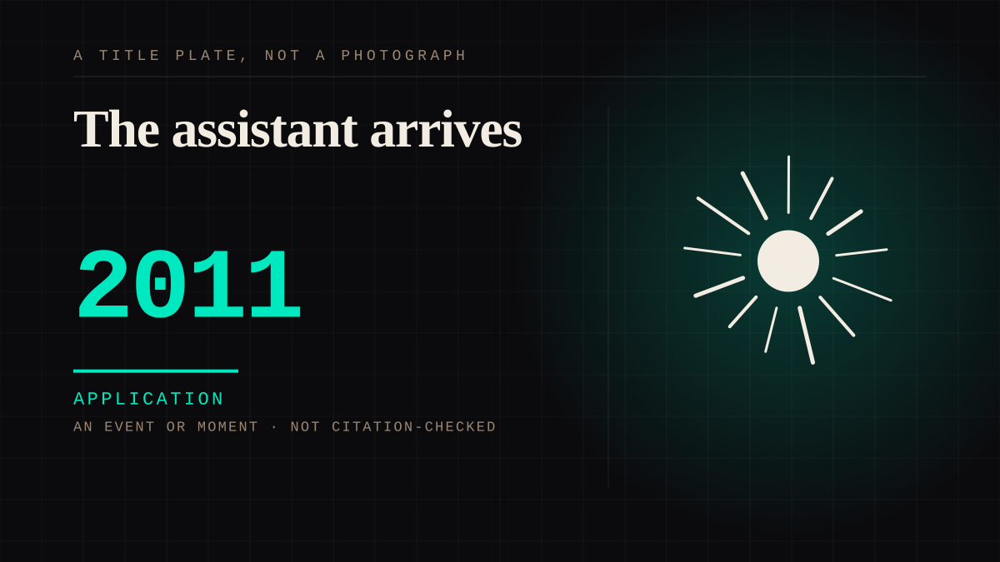

An event or moment · 2011 · Virtual worlds
The assistant arrives
A voice assistant on every phone, addressing the user by name, knowing the user's calendar, and present in the home.

The crossover entry point. The assistant is not a celebrity and is not a friend, but it is a presence that knows you, and the relationship forms anyway and is categorised as neither friendship nor tool use.
Application. One-sided attachment put to work on purpose. Creator economies, community, fandom as infrastructure, and the things that genuinely help people. Not automatically good - a tool with an obvious use is a tool that will also get a bad one.
Where it sits
2010 2010+ · 2011 2026
Provenance · 6 source record(s)
- retrievableTHE TITLE OF THE PAPER IS A PARTICIPANT'S SENTENCE. The study is titled 'I Almost Fell in Love with a Machine' after a subject's own private Instagram post about the conversational agent Lee. The authors state they did not expect any participant to develop a personal attachmentYu, Q., Nguyen, T., Prakkamakul, S., & Salehi, N. 'I Almost Fell in Love with a Machine': Speaking with Computers Affects Self-disclosure (UC Berkeley, X Lab). ↗
- retrievableThe mechanism, measured: people skipped FEWER invasive questions when listening and speaking than when reading and typing. It is the combination of both, not either alone, that triggers the social-actor response. The authors flag this as a new factor in user privacy concernsYu, Nguyen, Prakkamakul & Salehi, 'I Almost Fell in Love with a Machine'.
- retrievableThe warmth channel is where the work happens: emotional and opinion-based self-disclosure significantly increased perceived warmth over both normal conversation and factual disclosure, and high-intimacy disclosure fostered closer psychological connection, perceived empathy, friendliness and trustworthinessSun, X., Shen, T., Jiang, Q., & Jiang, B. (2025). Research on the Impact of an AI Voice Assistant's Gender and Self-Disclosure Strategies. ↗
- retrievableAnd why disclosure strategy has to be chosen rather than defaulted: research finds users who perceive an assistant as human-like form greater intimacy from PERSONAL disclosure, while users who perceive it as a machine form it from FACTUAL disclosure. The same utterance works only if you have already been read as a personSun et al. (2025), citing Saffarizadeh et al. (2024).
- retrievableGender is a dial on the conduit, not a decoration: a randomized experiment with 120 participants found a female voice produces higher perceived ANTHROPOMORPHISM, which in turn raises the credibility of the information it gives. Female voices also raised intended self-disclosureDo People Trust Female more than Male as a Voice Assistant? (Tampere University). ↗
- retrievableThe honest counterweight: warmth is the cheap channel and competence is not. Fiske et al. (2006) hold that warmth is the primary dimension while competence requires substantially more evidence to change - and disclosure strategy moved warmth but NOT competence. Reciprocal self-disclosure can also backfire entirely when users suspect manipulation, producing loss of trust, service cessation, and false answers in future disclosuresSun et al. (2025), citing Fiske et al. (2006) and Collins & Miller (1994).
Not yet stood behind. The entry is real. A person has not read the citation and confirmed it, so treat the date as approximate until they do.
Connected · 3 out, 3 in
It sits in
The full timeline → · The database → · See it in the atlas →